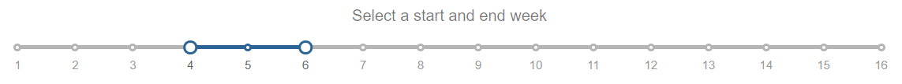
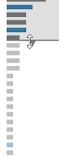

In the Resources Accessed view you can check out which files, videos, and other resources are accessed most often by your classmates.
The visualization shows which resources you've accessed (blue) and which you haven't (gray). If you haven't looked at a resource, you can click on the file name to open it up!
Customize the list: Use the week slider, grade ranking drop-down, resource types, and brush controller to change the files that display.
You can also set a preferred default for the grade ranking filter.
NOTE: The visualization only displays files and videos in your Canvas course. Readings and files outside Canvas, like YouTube, are not included.
You can customize the display, use mouse overs for more information, or click on a file name to access a resource.

The default view shows you what was accessed this week and last week. You can use the slider ends to change that time range. Move a slider and watch the list update below!
The chart defaults to show resources accessed by all students. You can use the drop-down to filter the list. Want to see what students with 90-100% in the course are accessing? Click that range in the drop-down. You can change the list of files to see what students in the 70-79%, 80-89%, or 90-100% ranking are reading.
Set your default setting for the grade range filter. Select a grade range from the drop-down, then save it by checking "Remember my setting." This filter will be automatically applied each time you return to the page. You can change your default at any time.
The chart defaults to show all available resource types in your course. You can use the checkboxes to filter the list. Want to see what lecture videos are popular? Check videos and uncheck files to focus on the videos accessed during the selected timeframe. You can filter the list to show the types of resources you're most interested in.
Use the brush control on the right side of the chart to select how many of the resources display in the main visualization. Drag the bottom line down to see more. Drag it up to see fewer.

Mouse over a bar for more information. If it's a resource you've accessed, then you can see how many times you viewed it and when you last viewed it.
The resource names on the left are clickable links. Click on a file name to access it from your Canvas course.